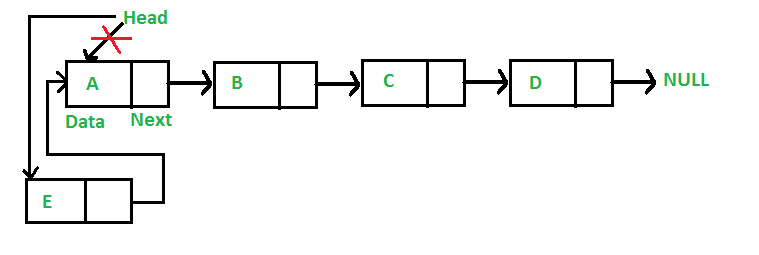
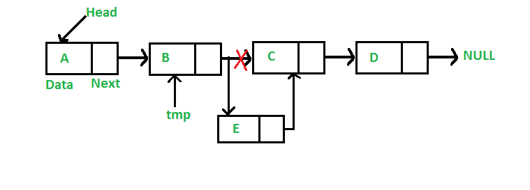
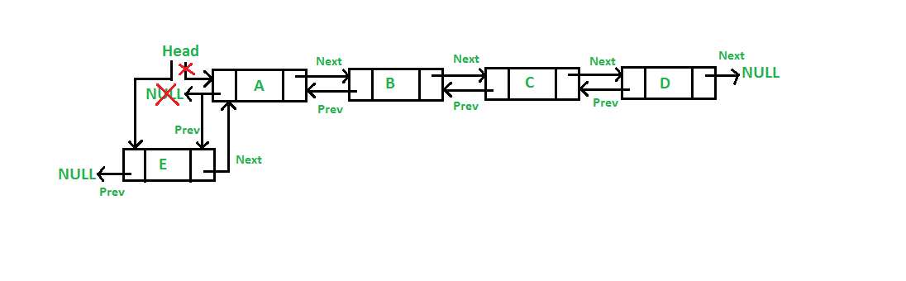

Inserting Element In Singly Linked List
In this post, methods to insert a new node in linked list are discussed. A node can be added in three ways
1) At the front of the linked list
2) After a given node.
3) At the end of the linked list.
1)Add a node at the front: (4 steps process)
The new node is always added before the head of the given Linked List. And newly added node becomes the new head of the Linked List. For example, if the given Linked List is 10->15->20->25 and we add an item 5 at the front, then the Linked List becomes 5->10->15->20->25. Let us call the function that adds at the front of the list is push(). The push() must receive a pointer to the head pointer, because push must change the head pointer to point to the new node (See this)
Following are the 4 steps to add a node at the front.
/* This function is in LinkedList class. Inserts a
new Node at front of the list. This method is
defined inside LinkedList class shown above */
public void push(int new_data)
{
/* 1 & 2: Allocate the Node &
Put in the data*/
Node new_node = new Node(new_data);
/* 3. Make next of new Node as head */
new_node.next = head;
/* 4. Move the head to point to new Node */
head = new_node;
}
2)Add a node after a given node: (5 steps process)
We are given a pointer to a node, and the new node is inserted after the given node.

/* This function is in LinkedList class.
Inserts a new node after the given prev_node. This method is
defined inside LinkedList class shown above */
public void insertAfter(Node prev_node, int new_data)
{
/* 1. Check if the given Node is null */
if (prev_node == null) {
System.out.println(
"The given previous node cannot be null");
return;
}
/* 2. Allocate the Node &
3. Put in the data*/
Node new_node = new Node(new_data);
/* 4. Make next of new Node as next of prev_node */
new_node.next = prev_node.next;
/* 5. make next of prev_node as new_node */
prev_node.next = new_node;
}
3)Add a node at the end: (6 steps process)
The new node is always added after the last node of the given Linked List. For example if the given Linked List is 5->10->15->20->25 and we add an item 30 at the end, then the Linked List becomes 5->10->15->20->25->30.
Since a Linked List is typically represented by the head of it, we have to traverse the list till the end and then change the next to last node to a new node.

/* Appends a new node at the end. This method is
defined inside LinkedList class shown above */
public void append(int new_data)
{
/* 1. Allocate the Node &
2. Put in the data
3. Set next as null */
Node new_node = new Node(new_data);
/* 4. If the Linked List is empty, then make the
new node as head */
if (head == null)
{
head = new Node(new_data);
return;
}
/* 4. This new node is going to be the last node, so
make next of it as null */
new_node.next = null;
/* 5. Else traverse till the last node */
Node last = head;
while (last.next != null)
last = last.next;
/* 6. Change the next of last node */
last.next = new_node;
return;
}
Inserting Element In Doubly Linked List
Insertion
A node can be added in four ways
1) At the front of the DLL
2) After a given node.
3) At the end of the DLL
4) Before a given node.
1) Add a node at the front: (A 5 steps process)
The new node is always added before the head of the given Linked List. And newly added node becomes the new head of DLL. For example if the given Linked List is 10152025 and we add an item 5 at the front, then the Linked List becomes 510152025. Let us call the function that adds at the front of the list is push(). The push() must receive a pointer to the head pointer, because push must change the head pointer to point to the new node (See this)

Following are the 5 steps to add node at the front.
// Adding a node at the front of the list
public void push(int new_data)
{
/* 1. allocate node
* 2. put in the data */
Node new_Node = new Node(new_data);
/* 3. Make next of new node as head and previous as NULL */
new_Node.next = head;
new_Node.prev = null;
/* 4. change prev of head node to new node */
if (head != null)
head.prev = new_Node;
/* 5. move the head to point to the new node */
head = new_Node;
}
2) Add a node after a given node.: (A 7 steps process)
We are given pointer to a node as prev_node, and the new node is inserted after the given node.

/* Given a node as prev_node, insert a new node after the given node */
public void InsertAfter(Node prev_Node, int new_data)
{
/*1. check if the given prev_node is NULL */
if (prev_Node == null) {
System.out.println("The given previous node cannot be NULL ");
return;
}
/* 2. allocate node
* 3. put in the data */
Node new_node = new Node(new_data);
/* 4. Make next of new node as next of prev_node */
new_node.next = prev_Node.next;
/* 5. Make the next of prev_node as new_node */
prev_Node.next = new_node;
/* 6. Make prev_node as previous of new_node */
new_node.prev = prev_Node;
/* 7. Change previous of new_node's next node */
if (new_node.next != null)
new_node.next.prev = new_node;
}
3) Add a node at the end: (7 steps process)
The new node is always added after the last node of the given Linked List. For example if the given DLL is 510152025 and we add an item 30 at the end, then the DLL becomes 51015202530. Since a Linked List is typically represented by the head of it, we have to traverse the list till end and then change the next of last node to new node.

// Add a node at the end of the list
void append(int new_data)
{
/* 1. allocate node
* 2. put in the data */
Node new_node = new Node(new_data);
Node last = head; /* used in step 5*/
/* 3. This new node is going to be the last node, so
* make next of it as NULL*/
new_node.next = null;
/* 4. If the Linked List is empty, then make the new
* node as head */
if (head == null) {
new_node.prev = null;
head = new_node;
return;
}
/* 5. Else traverse till the last node */
while (last.next != null)
last = last.next;
/* 6. Change the next of last node */
last.next = new_node;
/* 7. Make last node as previous of new node */
new_node.prev = last;
}
4) Add a node before a given node:
Steps
Let the pointer to this given node be next_node and the data of the new node to be added as new_data.
1)Check if the next_node is NULL or not. If it’s NULL, return from the function because any
new node can not be added before a NULL
2)Allocate memory for the new node, let it be called new_node
Set new_node->data = new_data
3)Set the previous pointer of this new_node as the previous node of the next_node,
new_node->prev = next_node->prev
4)Set the previous pointer of the next_node as the new_node, next_node->prev = new_node
5)Set the next pointer of this new_node as the next_node, new_node->next = next_node;
6)If the previous node of the new_node is not NULL, then set the next pointer of this previous
node as new_node, new_node->prev->next = new_node
7)Else, if the prev of new_node is NULL, it will be the new head node. So, make (*head_ref) = new_node.
A complete working program to test above functions.
// A complete working Java program to demonstrate all
// Class for Doubly Linked List
public class DLL {
Node head; // head of list
/* Doubly Linked list Node*/
class Node {
int data;
Node prev;
Node next;
// Constructor to create a new node
// next and prev is by default initialized as null
Node(int d) { data = d; }
}
// Adding a node at the front of the list
public void push(int new_data)
{
/* 1. allocate node
* 2. put in the data */
Node new_Node = new Node(new_data);
/* 3. Make next of new node as head and previous as NULL */
new_Node.next = head;
new_Node.prev = null;
/* 4. change prev of head node to new node */
if (head != null)
head.prev = new_Node;
/* 5. move the head to point to the new node */
head = new_Node;
}
// Add a node before the given node
public void InsertBefore(Node next_node, int new_data)
{
/*Check if the given nx_node is NULL*/
if(next_node == null)
{
System.out.println("The given next node can not be NULL");
return;
}
//Allocate node, put in the data
Node new_node = new Node(new_data);
//Making prev of new node as prev of next node
new_node.prev = next_node.prev;
//Making prev of next node as new node
next_node.prev = new_node;
//Making next of new node as next node
new_node.next = next_node;
//Check if new node is added as head
if(new_node.prev != null)
new_node.prev.next = new_node;
else
head = new_node;
}
/* Given a node as prev_node, insert
a new node after the given node */
public void InsertAfter(Node prev_Node, int new_data)
{
/*1. check if the given prev_node is NULL */
if (prev_Node == null) {
System.out.println("The given previous node cannot be NULL ");
return;
}
/* 2. allocate node
* 3. put in the data */
Node new_node = new Node(new_data);
/* 4. Make next of new node as next of prev_node */
new_node.next = prev_Node.next;
/* 5. Make the next of prev_node as new_node */
prev_Node.next = new_node;
/* 6. Make prev_node as previous of new_node */
new_node.prev = prev_Node;
/* 7. Change previous of new_node's next node */
if (new_node.next != null)
new_node.next.prev = new_node;
}
// Add a node at the end of the list
void append(int new_data)
{
/* 1. allocate node
* 2. put in the data */
Node new_node = new Node(new_data);
Node last = head; /* used in step 5*/
/* 3. This new node is going to be the last node, so
* make next of it as NULL*/
new_node.next = null;
/* 4. If the Linked List is empty, then make the new
* node as head */
if (head == null) {
new_node.prev = null;
head = new_node;
return;
}
/* 5. Else traverse till the last node */
while (last.next != null)
last = last.next;
/* 6. Change the next of last node */
last.next = new_node;
/* 7. Make last node as previous of new node */
new_node.prev = last;
}
// This function prints contents of
// linked list starting from the given node
public void printlist(Node node)
{
Node last = null;
System.out.println("Traversal in forward Direction");
while (node != null) {
System.out.print(node.data + " ");
last = node;
node = node.next;
}
System.out.println();
System.out.println("Traversal in reverse direction");
while (last != null) {
System.out.print(last.data + " ");
last = last.prev;
}
}
/* Driver program to test above functions*/
public static void main(String[] args)
{
/* Start with the empty list */
DLL dll = new DLL();
// Insert 6. So linked list becomes 6->NULL
dll.append(6);
// Insert 7 at the beginning. So
// linked list becomes 7->6->NULL
dll.push(7);
// Insert 1 at the beginning. So
// linked list becomes 1->7->6->NULL
dll.push(1);
// Insert 4 at the end. So linked
// list becomes 1->7->6->4->NULL
dll.append(4);
// Insert 8, after 7. So linked
// list becomes 1->7->8->6->4->NULL
dll.InsertAfter(dll.head.next, 8);
// Insert 5, before 8.So linked
// list becomes 1->7->5->8->6->4
dll.InsertBefore(dll.head.next.next, 5);
System.out.println("Created DLL is: ");
dll.printlist(dll.head);
}
}